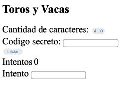
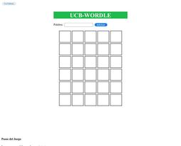
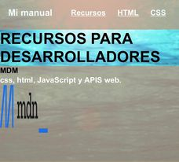

 Es un juego sobre adivinar un numero a base de pistas, si te sale toro(!) estas con el numero en el mismo lugar donde deberia estar y vaca (*) si existe el numero pero no esta en el lugar correcto
 Es un juego basado en wordle con base en el anterior proyecto mencionado
 Es un manual sobre todo lo aprendido en la materia de tecnologia web para hacer paginas web con html, css.